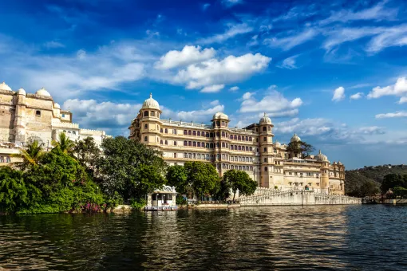

The Ultimate 2-Day
Udaipur Sightseeing Plan
Udaipur is one of India's most beautiful heritage cities, where royal palaces rise above tranquil lakes and centuries-old traditions continue to thrive in bustling markets and historic streets.

Itinerary
Udaipur is one of India's most beautiful heritage cities, where royal palaces rise above tranquil lakes and centuries-old traditions continue to thrive in bustling markets and historic streets. Known as the City of Lakes, Udaipur offers a remarkable mix of history, architecture, culture, and natural beauty.
If you have just two days to explore the city, careful planning can help you experience its most iconic attractions without feeling rushed. From magnificent palaces and scenic boat rides to cultural performances and sunset viewpoints, this ultimate 2-day Udaipur sightseeing plan covers the very best the city has to offer. Whether you're visiting as a couple, a family, or a solo traveler, this itinerary will help you make the most of your trip to Udaipur.
Day 1: Explore Udaipur's Royal Heritage
Day 1: Explore Udaipur's Royal Heritage
8:00 AM – Begin at City Palace
City Palace
Recommended Time: 2–3 hours
Start your journey at City Palace, the city's most iconic landmark. Built over nearly 400 years by the rulers of Mewar, the palace complex offers a fascinating introduction to Udaipur's royal history. The palace also offers spectacular views of Lake Pichola and the Old City.
- Mor Chowk
- Badi Mahal
- Zenana Mahal
- Crystal Gallery
- City Palace Museum
11:00 AM – Visit Jagdish Temple
Jagdish Temple
Recommended Time: 30–45 minutes
Located just outside City Palace, Jagdish Temple is one of the most important temples in Udaipur. Built in 1651, it is renowned for intricate stone carvings, historic architecture, and a spiritual atmosphere. The temple provides insight into the religious and cultural heritage of Mewar.
12:00 PM – Walk Through the Old City
Walk Through the Old City
One of the best ways to understand Udaipur is by exploring its historic streets. Walking through these lanes reveals the city's authentic character beyond its major monuments.
- Heritage havelis
- Artisan workshops
- Local cafés
- Traditional markets
- Colorful murals
1:30 PM – Lunch at a Rooftop Restaurant
Lunch at a Rooftop Restaurant
Udaipur's rooftop dining scene is famous for its stunning views. A relaxed lunch provides an opportunity to appreciate the city's unique landscape.
- Lake Pichola
- City Palace
- Jag Mandir
4:00 PM – Boat Ride on Lake Pichola
Boat Ride on Lake Pichola
No sightseeing plan is complete without visiting Lake Pichola. A boat ride offers exceptional views. The experience becomes particularly magical during the late afternoon.
- City Palace
- Jag Mandir
- Lake Palace
- Historic ghats
6:00 PM – Sunset at Gangaur Ghat
Sunset at Gangaur Ghat
After your boat ride, spend some time at Gangaur Ghat. This waterfront location is one of the most scenic spots in the city and offers beautiful views as the sun sets over Lake Pichola.
7:00 PM – Cultural Performance at Bagore Ki Haveli
Cultural Performance at Bagore Ki Haveli
End your first day at Bagore Ki Haveli. It's one of the most authentic cultural experiences available in Udaipur.
- Traditional folk dances
- Puppet performances
- Local music
- Rajasthan's artistic traditions
Day 2: Lakes, Gardens and Scenic Viewpoints
7:30 AM – Morning at Fateh Sagar Lake
Morning at Fateh Sagar Lake
Begin your second day at Fateh Sagar Lake. The lake is particularly beautiful in the morning when the weather is pleasant and the area is filled with local residents enjoying their daily routines.
- Walking along the promenade
- Photography
- Tea and local snacks
- Lake views
9:30 AM – Visit Saheliyon Ki Bari
Saheliyon Ki Bari
One of Udaipur's most elegant gardens, Saheliyon Ki Bari was created for royal women. It offers a peaceful contrast to the city's busier attractions.
- Marble fountains
- Lotus pools
- Decorative pavilions
- Beautiful landscaping
11:00 AM – Explore Local Markets
Explore Local Markets
Shopping is an essential part of the Udaipur experience.
- Hathipole Bazaar — Miniature paintings, handcrafted textiles, traditional handicrafts
- Bapu Bazaar — Local souvenirs, Rajasthani clothing, decorative items
1:00 PM – Enjoy Traditional Rajasthani Cuisine
Enjoy Traditional Rajasthani Cuisine
Use the afternoon to explore local food. Experiencing local cuisine adds depth to any sightseeing trip.
- Dal Baati Churma
- Gatte Ki Sabzi
- Ker Sangri
- Laal Maas
4:00 PM – Visit Sajjangarh Monsoon Palace
Sajjangarh Monsoon Palace
Perched high above the city, Sajjangarh Monsoon Palace offers some of the finest views in Rajasthan. From here, visitors can enjoy panoramic views of:
- Lake Pichola
- Fateh Sagar Lake
- Aravalli Hills
- Udaipur skyline
6:30 PM – Watch the Sunset
Watch the Sunset
The sunset from Monsoon Palace is often considered one of the highlights of a trip to Udaipur. As daylight fades over the lakes and hills, the city reveals why it remains one of India's most romantic and picturesque destinations.
If You Have Extra Time
If your schedule allows, consider adding these attractions. They offer deeper insight into Udaipur's culture and history.
Vintage Car Museum
Shilpgram
Ahar Cenotaphs
Local Art Galleries
Heritage Walks Through the Old City


Where to Stay During Your
Udaipur Sightseeing Trip
Accommodation can significantly influence your overall experience. Many travelers prefer staying in a centrally located hotel in Udaipur that offers easy access to major attractions. Heritage and boutique hotels in Udaipur are particularly popular because they allow visitors to experience the city's architectural character and hospitality traditions firsthand.
For travelers seeking a more intimate heritage atmosphere, Kaladwas Lal Haveli offers traditional Mewari architecture, personalized service, and a boutique heritage experience that complements the city's royal charm.
Book Your Stay View Rooms
Why Udaipur Remains One of
India's Most Loved Cities
Udaipur's appeal extends beyond its famous landmarks. The combination of these experiences creates a destination that feels both grand and welcoming.